Chapter 13: Modern Understandings of Inheritance¶
Introduction¶
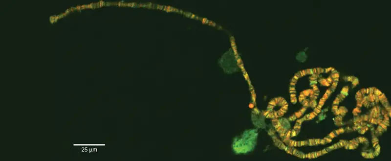
The gene is the physical unit of inheritance, and genes are arranged in a linear order on chromosomes. Chromosome behavior and interaction during meiosis explain, at a cellular level, inheritance patterns that we observe in populations. Genetic disorders involving alterations in chromosome number or structure may have dramatic effects and can prevent a fertilized egg from developing.
13.1 Chromosomal Theory and Genetic Linkage¶
Learning Objectives
By the end of this section, you will be able to do the following:
- Discuss Sutton’s Chromosomal Theory of Inheritance
- Describe genetic linkage
- Explain the process of homologous recombination, or crossing over
- Describe chromosome creation
- Calculate the distances between three genes on a chromosome using a three-point test cross
Long before scientists visualized chromosomes under a microscope, the father of modern genetics, Gregor Mendel, began studying heredity in 1843. With improved microscopic techniques during the late 1800s, cell biologists could stain and visualize subcellular structures with dyes and observe their actions during cell division and meiosis. With each mitotic division, chromosomes replicated, condensed from an amorphous (no constant shape) nuclear mass into distinct X-shaped bodies (pairs of identical sister chromatids), and migrated to separate cellular poles.
Chromosomal Theory of Inheritance¶
The speculation that chromosomes might be the key to understanding heredity led several scientists to examine Mendel’s publications and reevaluate his model in terms of chromosome behavior during mitosis and meiosis. In 1902, Theodor Boveri observed that proper sea urchin embryonic development does not occur unless chromosomes are present. That same year, Walter Sutton observed chromosome separation into daughter cells during meiosis (Figure 13.2). Together, these observations led to the Chromosomal Theory of Inheritance, which identified chromosomes as the genetic material responsible for Mendelian inheritance.
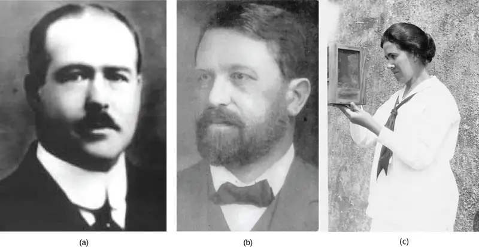
The Chromosomal Theory of Inheritance was consistent with Mendel’s laws, which the following observations supported:
- During meiosis, homologous chromosome pairs migrate as discrete structures that are independent of other chromosome pairs.
- Chromosome sorting from each homologous pair into pre-gametes appears to be random.
- Each parent synthesizes gametes that contain only half their chromosomal complement.
- Even though male and female gametes (sperm and egg) differ in size and morphology, they have the same number of chromosomes, suggesting equal genetic contributions from each parent.
- The gametic chromosomes combine during fertilization to produce offspring with the same chromosome number as their parents.
Despite the lack of direct evidence that chromosomes carry traits, the compelling correlation between chromosome behavior during meiosis and Mendel's abstract laws led scientists to propose the Chromosomal Theory of Inheritance. Critics pointed out that individuals had far more independently segregating traits than they had chromosomes. About ten years after the theory was proposed, Eleanor Carothers was the first to discover physical evidence supporting it; she observed independent chromosome assortment in grasshoppers. Then, after several years of carrying out crosses with the fruit fly, Drosophila melanogaster, Thomas Hunt Morgan provided additional experimental evidence to support the Chromosomal Theory of Inheritance.
Genetic Linkage and Distances¶
Mendel’s work suggested that traits are inherited independently of each other. Morgan identified a 1:1 correspondence between a segregating trait and the X chromosome, suggesting that random chromosome segregation was the physical basis of Mendel’s model. This also demonstrated that linked genes disrupt Mendel’s predicted outcomes. That each chromosome can carry many linked genes explains how individuals can have many more traits than they have chromosomes. However, researchers in Morgan’s laboratory suggested that alleles positioned on the same chromosome were not always inherited together. During meiosis, linked genes somehow became unlinked.
Homologous Recombination¶
In 1909, Frans Janssen observed chiasmata—the point at which chromatids are in contact with each other and may exchange segments—prior to the first meiotic division. He suggested that alleles become unlinked and chromosomes physically exchange segments. As chromosomes condensed and paired with their homologs, they appeared to interact at distinct points. Janssen suggested that these points corresponded to regions in which chromosome segments exchanged. We now know that the pairing and interaction between homologous chromosomes, or synapsis, does more than simply organize the homologs for migration to separate daughter cells. When synapsed, homologous chromosomes undergo reciprocal physical exchanges at their arms in homologous recombination, or more simply, “crossing over.”
To better understand the type of experimental results that researchers were obtaining at this time, consider a heterozygous individual that inherited dominant maternal alleles for two genes on the same chromosome (such as A and B) and two recessive paternal alleles for those same genes (such as a and b). If the genes are linked, one would expect this individual to produce gametes that are either AB or ab with a 1:1 ratio. If the genes are unlinked, the individual should produce AB, Ab, aB, and ab gametes with equal frequencies, according to the Mendelian concept of independent assortment. Because they correspond to new allele combinations, the genotypes Ab and aB are nonparental types that result from homologous recombination during meiosis. Parental types are progeny that exhibit the same allelic combination as their parents. Morgan and his colleagues, however, found that when they test crossed such heterozygous individuals to a homozygous recessive parent (AaBb × aabb), both parental and nonparental cases occurred. For example, 950 offspring might be recovered that were either AaBb or aabb, but 50 offspring would also result that were either Aabb or aaBb. These results suggested that linkage occurred most often, but a significant minority of offspring were the products of recombination.
One of the experiments in Morgan's lab involving the crosses of flies for two traits, body color (gray or black) and wing shape (normal and vestigial), demonstrated the recombination events that lead to the development of nonparental phenotypes (Figure 13.3).
Visual Connection
![The illustration shows the possible inheritance patterns of linked and unlinked genes. The example used includes fruit fly body color and wing length. Fruit flies may have a dominant gray color lowercase b superscript +, or a recessive black color lowercase b. They may have dominant long wings lowercase v g superscript +, or recessive short wings, lowercase v g. Three hypothetical inheritance patterns for a test cross between a heterozygous and a recessive fruit fly are shown, based on gene placement. The actual experimental results published by Thomas Hunt Morgan in 1912 are also shown. In the first hypothetical inheritance pattern in part a, the genes for the two characteristics are on different chromosomes. Independent assortment occurs so that the ratio of genotypes in the offspring is 1 b + b v g + v g colon 1 b b v g v g colon 1 b + b v g v g colon 1 b b v g + v g, and 50% of the offspring are nonparental types. In the second hypothetical inheritance pattern in part b, the genes are close together on the same chromosome so that no crossover occurs between them. The ratio of genotypes is 1 b + b v g + v g colon 1. b b v g v g, and none of the offspring are recombinant. In the third hypothetical inheritance pattern in part c, the genes are far apart on the same chromosome so that crossing over occurs 100% of the time. The ratio of genotypes is the same as for genes on two different chromosomes, and 50% of the offspring are recombinant, nonparental types. Part d shows that the number of offspring that Thomas Hunt Morgan actually observed was 965 colon 944 colon 206 colon 185, which is b + b v g + v g colon b b v g v g colon b + b v g v g colon b b v g + v g. Seventeen percent of the offspring were recombinant, indicating that the genes are on the same chromosome and crossing over occurs between them some of the time.](img/figure-13-01-02.webp)
In a test cross for two characteristics such as the one here, can the recombinant offspring's predicted frequency be 60 percent? Why or why not?
Genetic Maps¶
Janssen did not have the technology to demonstrate crossing over so it remained an abstract idea that scientists did not widely believe. Scientists thought chiasmata were a variation on synapsis and could not understand how chromosomes could break and rejoin. Yet, the data were clear that linkage did not always occur. Ultimately, it took a young undergraduate student and an “all-nighter” to mathematically elucidate the linkage and recombination problem.
In 1913, Alfred Sturtevant, a student in Morgan’s laboratory, gathered results from researchers in the laboratory, and took them home one night to mull them over. By the next morning, he had created the first “chromosome map,” a linear representation of gene order and relative distance on a chromosome (Figure 13.4).
Visual Connection
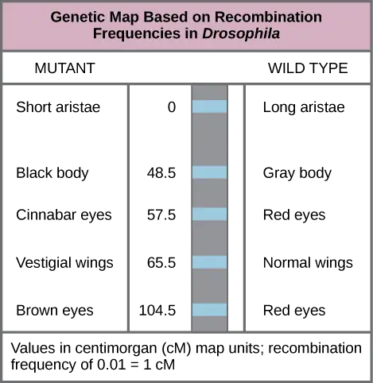
Which of the following statements is true?
- Recombination of the body color and red/cinnabar eye alleles will occur more frequently than recombination of the alleles for wing length and aristae length.
- Recombination of the body color and aristae length alleles will occur more frequently than recombination of red/brown eye alleles and the aristae length alleles.
- Recombination of the gray/black body color and long/short aristae alleles will not occur.
- Recombination of the red/brown eye and long/short aristae alleles will occur more frequently than recombination of the alleles for wing length and body color.
As Figure 13.4 shows, by using recombination frequency to predict genetic distance, we can infer the relative gene order on chromosome 2. The values represent map distances in centimorgans (cM), which correspond to recombination frequencies (in percent). Therefore, the genes for body color and wing size were 65.5 − 48.5 = 17 cM apart, indicating that the maternal and paternal alleles for these genes recombine in 17 percent of offspring, on average.
To construct a chromosome map, Sturtevant assumed that genes were ordered serially on threadlike chromosomes. He also assumed that the incidence of recombination between two homologous chromosomes could occur with equal likelihood anywhere along the chromosome's length. Operating under these assumptions, Sturtevant postulated that alleles that were far apart on a chromosome were more likely to dissociate during meiosis simply because there was a larger region over which recombination could occur. Conversely, alleles that were close to each other on the chromosome were likely to be inherited together. The average number of crossovers between two alleles—that is, their recombination frequency—correlated with their genetic distance from each other, relative to the locations of other genes on that chromosome. Considering the example cross between AaBb and aabb above, we could calculate the recombination's frequency as 50/1000 = 0.05. That is, the likelihood of a crossover between genes A/a and B/b was 0.05, or 5 percent. Such a result would indicate that the genes were definitively linked, but that they were far enough apart for crossovers to occasionally occur. Sturtevant divided his genetic map into map units, or centimorgans (cM), in which a 0.01 recombination frequency corresponds to 1 cM.
By representing alleles in a linear map, Sturtevant suggested that genes can range from linking perfectly (recombination frequency = 0) to unlinking perfectly (recombination frequency = 0.5) when genes are on different chromosomes or genes separate very far apart on the same chromosome. Perfectly unlinked genes correspond to the frequencies Mendel predicted to assort independently in a dihybrid cross. A 0.5 recombination frequency indicates that 50 percent of offspring are recombinants and the other 50 percent are parental types. That is, every type of allele combination is represented with equal frequency. This representation allowed Sturtevant to additively calculate distances between several genes on the same chromosome. However, as the genetic distances approached 0.50, his predictions became less accurate because it was not clear whether the genes were very far apart on the same or on different chromosomes.
In 1931, Barbara McClintock and Harriet Creighton demonstrated the crossover of homologous chromosomes in corn plants. Weeks later, Curt Stern demonstrated microscopically homologous recombination in Drosophila. Stern observed several X-linked phenotypes that were associated with a structurally unusual and dissimilar X chromosome pair in which one X was missing a small terminal segment, and the other X was fused to a piece of the Y chromosome. By crossing flies, observing their offspring, and then visualizing the offspring’s chromosomes, Stern demonstrated that every time the offspring allele combination deviated from either of the parental combinations, there was a corresponding exchange of an X chromosome segment. Using mutant flies with structurally distinct X chromosomes was the key to observing the products of recombination because DNA sequencing and other molecular tools were not yet available. We now know that homologous chromosomes regularly exchange segments in meiosis by reciprocally breaking and rejoining their DNA at precise locations. Aurora Ruiz-Herrera, for example, studies the occurrence of genetic breakpoints at locations in the chromosomes known as fragile sites. By identifying chromosomal fragile sites that are shared between humans and other primates, Ruiz-Herrera has provided a deeper understanding of mammalian and specifically human evolution.
Interactive
Review Sturtevant’s process to create a genetic map on the basis of recombination frequencies here.
Mendel’s Mapped Traits¶
Homologous recombination is a common genetic process, yet Mendel never observed it. Had he investigated both linked and unlinked genes, it would have been much more difficult for him to create a unified model of his data on the basis of probabilistic calculations. Researchers who have since mapped the seven traits that Mendel investigated onto a pea plant genome's seven chromosomes have confirmed that all the genes he examined are either on separate chromosomes or are sufficiently far apart as to be statistically unlinked. Some have suggested that Mendel was enormously lucky to select only unlinked genes; whereas, others question whether Mendel discarded any data suggesting linkage. In any case, Mendel consistently observed independent assortment because he examined genes that were effectively unlinked.
13.2 Chromosomal Basis of Inherited Disorders¶
Learning Objectives
By the end of this section, you will be able to do the following:
- Describe how a karyogram is created
- Explain how nondisjunction leads to disorders in chromosome number
- Compare disorders that aneuploidy causes
- Describe how errors in chromosome structure occur through inversions and translocations
Inherited disorders can arise when chromosomes behave abnormally during meiosis. We can divide chromosome disorders into two categories: abnormalities in chromosome number and chromosomal structural rearrangements. Because even small chromosome segments can span many genes, chromosomal disorders are characteristically dramatic and often fatal.
Chromosome Identification¶
Chromosome isolation and microscopic observation forms the basis of cytogenetics and is the primary method by which clinicians detect chromosomal abnormalities in humans. A karyotype is the number and appearance of chromosomes, and includes their length, banding pattern, and centromere position. To obtain a view of an individual’s karyotype, cytologists photograph the chromosomes and then cut and paste each chromosome into a chart, or karyogram. Another name is an ideogram (Figure 13.5).
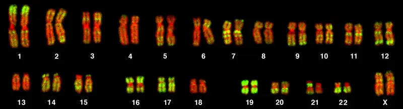
In a given species, we can identify chromosomes by their number, size, centromere position, and banding pattern. In a human karyotype, autosomes or “body chromosomes” (all of the non–sex chromosomes) are generally organized in approximate order of size from largest (chromosome 1) to smallest (chromosome 22). The X and Y chromosomes are not autosomes. However, chromosome 21 is actually shorter than chromosome 22. Researchers discovered this after naming Down syndrome as trisomy 21, reflecting how this disorder results from possessing one extra chromosome 21 (three total). Not wanting to change the name of this important disorder, scientists retained the numbering of chromosome 21 despite describing it having the shortest set of chromosomes. We may designate the chromosome “arms” projecting from either end of the centromere as short or long, depending on their relative lengths. We abbreviate the short arm p (for “petite”); whereas, we abbreviate the long arm q (because it follows “p” alphabetically). Numbers further subdivide and denote each arm. Using this naming system, we can describe chromosome locations consistently in the scientific literature.
Career Connection: Geneticists Use Karyograms to Identify Chromosomal Aberrations
Although we refer to Mendel as the “father of modern genetics,” he performed his experiments with none of the tools that the geneticists of today routinely employ. One such powerful cytological technique is karyotyping, a method in which geneticists can identify traits characterized by chromosomal abnormalities from a single cell. To observe an individual’s karyotype, a geneticist first collects a person’s cells (like white blood cells) from a blood sample or other tissue. In the laboratory, the geneticist stimulates the isolated cells to begin actively dividing. The geneticist then applies the chemical colchicine to cells to arrest condensed chromosomes in metaphase. The geneticist then induces swelling in the cells using a hypotonic solution so the chromosomes spread apart. Finally, the geneticist preserves the sample in a fixative and applies it to a slide.
The geneticist then stains chromosomes with one of several dyes to better visualize each chromosome pair's distinct and reproducible banding patterns. Following staining, the geneticist views the chromosomes using bright-field microscopy. A common stain choice is the Giemsa stain. Giemsa staining results in approximately 400–800 bands (of tightly coiled DNA and condensed proteins) arranged along all 23 chromosome pairs. An experienced geneticist can identify each band. In addition to the banding patterns, geneticists further identify chromosomes on the basis of size and centromere location. To obtain the classic depiction of the karyotype in which homologous chromosome pairs align in numerical order from longest to shortest, the geneticist obtains a digital image, identifies each chromosome, and manually arranges the chromosomes into this pattern (Figure 13.5).
At its most basic, the karyogram may reveal genetic abnormalities in which an individual has too many or too few chromosomes per cell. Examples of this are Down Syndrome, which one identifies by a third copy of chromosome 21, and Turner Syndrome, which is characterized by the presence of only one X chromosome in females instead of the normal two. Geneticists can also identify large DNA deletions or insertions. For instance, geneticists can identify Jacobsen Syndrome—which involves distinctive facial features as well as heart and bleeding defects—by a deletion on chromosome 11. Finally, the karyotype can pinpoint translocations, which occur when a segment of genetic material breaks from one chromosome and reattaches to another chromosome or to a different part of the same chromosome. Translocations are implicated in certain cancers, including chronic myelogenous leukemia.
During Mendel’s lifetime, inheritance was an abstract concept that one could only infer by performing crosses and observing the traits that offspring expressed. By observing a karyogram, today’s geneticists can actually visualize an individual's chromosomal composition to confirm or predict genetic abnormalities in offspring, even before birth.
Chromosome Number Disorders¶
Of all of the chromosomal disorders, chromosome number abnormalities are the most obviously identifiable from a karyogram. Chromosome number disorders include duplicating or losing entire chromosomes, as well as changes in the number of complete sets of chromosomes. They are caused by nondisjunction, which occurs when homologous chromosome pairs or sister chromatids fail to separate during meiosis. Misaligned or incomplete synapsis, or a spindle apparatus dysfunction that facilitates chromosome migration, can cause nondisjunction. The risk of nondisjunction occurring increases with the parents' age.
Nondisjunction can occur during either meiosis I or II, with differing results (Figure 13.6). If homologous chromosomes fail to separate during meiosis I, the result is two gametes that lack that particular chromosome and two gametes with two chromosome copies. If sister chromatids fail to separate during meiosis II, the result is one gamete that lacks that chromosome, two normal gametes with one chromosome copy, and one gamete with two chromosome copies.
Visual Connection
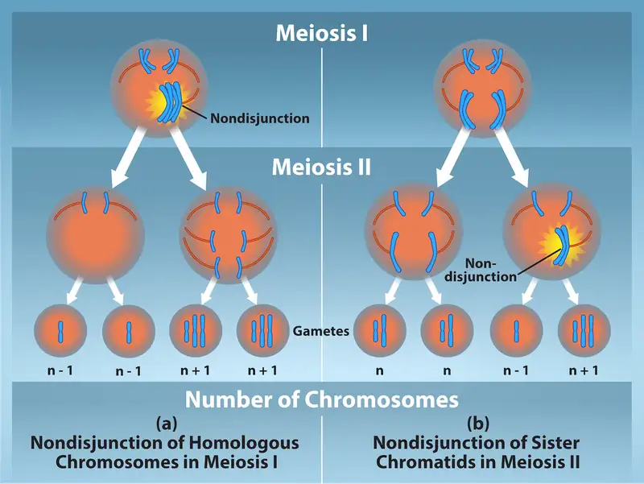
Which of the following statements about nondisjunction is true?
- Nondisjunction only results in gametes with n+1 or n–1 chromosomes.
- Nondisjunction occurring during meiosis II results in 50 percent normal gametes.
- Nondisjunction during meiosis I results in 50 percent normal gametes.
- Nondisjunction always results in four different kinds of gametes.
Aneuploidy¶
Scientists call an individual with the appropriate number of chromosomes for their species euploid. In humans, euploidy corresponds to 22 pairs of autosomes and one pair of sex chromosomes. An individual with an error in chromosome number is described as aneuploid, a term that includes monosomy (losing one chromosome) or trisomy (gaining an extraneous chromosome). Monosomic human zygotes missing any one copy of an autosome invariably fail to develop to birth because they lack essential genes. This underscores the importance of “gene dosage” in humans. Most autosomal trisomies also fail to develop to birth; however, duplications of some smaller chromosomes (13, 15, 18, 21, or 22) can result in offspring that survive for several weeks to many years. Trisomic individuals suffer from a different type of genetic imbalance: an excess in gene dose. Individuals with an extra chromosome may synthesize an abundance of the gene products, which that chromosome encodes. This extra dose (150 percent) of specific genes can lead to a number of functional challenges and often precludes development. The most common trisomy among viable births is that of chromosome 21, which corresponds to Down Syndrome. Short stature and stunted digits, facial distinctions that include a broad skull and large tongue, and significant developmental delays characterize individuals with this inherited disorder. We can correlate the incidence of Down syndrome with maternal age. Older people are more likely to become pregnant with fetuses carrying the trisomy 21 genotype (Figure 13.7).
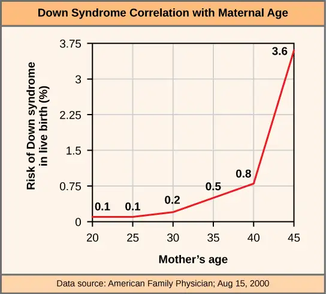
Interactive
Visualize adding a chromosome that leads to Down syndrome in this video simulation.
Polyploidy¶
We call an individual with more than the correct number of chromosome sets (two for diploid species) polyploid. For instance, fertilizing an abnormal diploid egg with a normal haploid sperm would yield a triploid zygote. Polyploid animals are extremely rare, with only a few examples among the flatworms, crustaceans, amphibians, fish, and lizards. Polyploid animals are sterile because meiosis cannot proceed normally and instead produces mostly aneuploid daughter cells that cannot yield viable zygotes. Rarely, polyploid animals can reproduce asexually by haplodiploidy, in which an unfertilized egg divides mitotically to produce offspring. In contrast, polyploidy is very common in the plant kingdom, and polyploid plants tend to be larger and more robust than euploids of their species (Figure 13.8).
Sex Chromosome Nondisjunction in Humans¶
Humans display dramatic deleterious effects with autosomal trisomies and monosomies. Therefore, it may seem counterintuitive that human females and males can function normally, despite carrying different numbers of the X chromosome. Rather than a gain or loss of autosomes, variations in the number of sex chromosomes occur with relatively mild effects. In part, this happens because of the molecular process X inactivation. Early in development, when female mammalian embryos consist of just a few thousand cells (relative to trillions in the newborn), one X chromosome in each cell inactivates by tightly condensing into a quiescent (dormant) structure, or a Barr body. The chance that an X chromosome (maternally or paternally derived) inactivates in each cell is random, but once this occurs, all cells derived from that one will have the same inactive X chromosome or Barr body. By this process, females compensate for their double genetic dose of X chromosome. In so-called “tortoiseshell” cats, we observe embryonic X inactivation as color variegation (Figure 13.9). Females that are heterozygous for an X-linked coat color gene will express one of two different coat colors over different regions of their body, corresponding to whichever X chromosome inactivates in that region's embryonic cell progenitor.
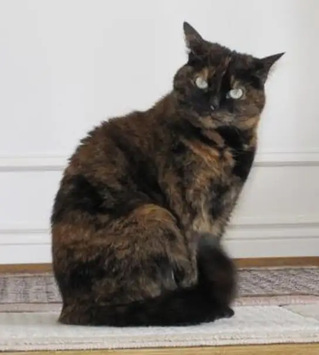
An individual carrying an abnormal number of X chromosomes will inactivate all but one X chromosome in each of her cells. However, even inactivated X chromosomes continue to express a few genes, and X chromosomes must reactivate for the proper maturation of female ovaries. As a result, X-chromosomal abnormalities typically occur with mild intellectual and physical disorders or disabilities, as well as sterility. If the X chromosome is absent altogether, the individual will not develop in utero.
Scientists have identified and characterized several errors in sex chromosome number. Individuals with three X chromosomes, triplo-X, are phenotypically female but express developmental delays and reduced fertility. The XXY genotype, corresponding to one type of Klinefelter syndrome, corresponds to phenotypically male individuals with small testes, enlarged breasts, and reduced body hair. More complex types of Klinefelter syndrome exist in which the individual has as many as five X chromosomes. In all types, every X chromosome except one undergoes inactivation to compensate for the excess genetic dosage. We see this as several Barr bodies in each cell nucleus. Turner syndrome, characterized as an X0 genotype (i.e., only a single sex chromosome), corresponds to a phenotypically female individual with short stature, webbed skin in the neck region, hearing and cardiac impairments, and sterility.
Duplications and Deletions¶
In addition to losing or gaining an entire chromosome, a chromosomal segment may duplicate or lose itself. Duplications and deletions often produce offspring that survive but exhibit abnormalities. Duplicated chromosomal segments may fuse to existing chromosomes or may be free in the nucleus. Cri-du-chat (from the French for “cry of the cat”) is a syndrome that occurs with nervous system abnormalities and identifiable physical features that result from a deletion of most 5p (the small arm of chromosome 5) (Figure 13.10). Infants with this genotype emit a characteristic high-pitched cry on which the disorder’s name is based.
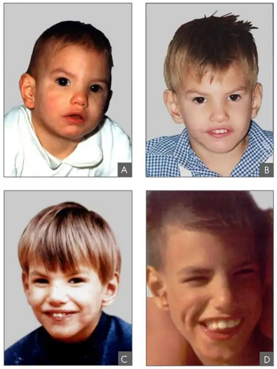
Chromosomal Structural Rearrangements¶
Cytologists have characterized numerous structural rearrangements in chromosomes, but chromosome inversions and translocations are the most common. We can identify both during meiosis by the adaptive pairing of rearranged chromosomes with their former homologs to maintain appropriate gene alignment. If the genes on two homologs are not oriented correctly, a recombination event could result in losing genes from one chromosome and gaining genes on the other. This would produce aneuploid gametes.
Chromosome Inversions¶
A chromosome inversion is the detachment, 180° rotation, and reinsertion of part of a chromosome. Inversions may occur in nature as a result of mechanical shear, or from transposable elements' action (special DNA sequences capable of facilitating rearranging chromosome segments with the help of enzymes that cut and paste DNA sequences). Unless they disrupt a gene sequence, inversions only change gene orientation and are likely to have more mild effects than aneuploid errors. However, altered gene orientation can result in functional changes because regulators of gene expression could move out of position with respect to their targets, causing aberrant levels of gene products.
An inversion can be pericentric and include the centromere, or paracentric and occur outside the centromere (Figure 13.11). A pericentric inversion that is asymmetric about the centromere can change the chromosome arms' relative lengths, making these inversions easily identifiable.
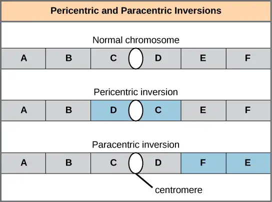
When one homologous chromosome undergoes an inversion but the other does not, the individual is an inversion heterozygote. To maintain point-for-point synapsis during meiosis, one homolog must form a loop, and the other homolog must mold around it. Although this topology can ensure that the genes correctly align, it also forces the homologs to stretch and can occur with imprecise synapsis regions (Figure 13.12).
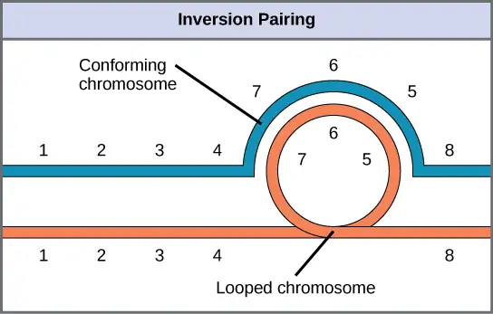
Evolution Connection: The Chromosome 18 Inversion
Not all chromosomes' structural rearrangements produce nonviable, impaired, or infertile individuals. In rare instances, such a change can result in new species evolving. In fact, a pericentric inversion in chromosome 18 appears to have contributed to human evolution. This inversion is not present in our closest genetic relatives, the chimpanzees. Humans and chimpanzees differ cytogenetically by pericentric inversions on several chromosomes and by the fusion of two separate chromosomes in chimpanzees that correspond to chromosome two in humans.
Scientists believe the pericentric chromosome 18 inversion occurred in early humans following their divergence from a common ancestor with chimpanzees approximately five million years ago. Researchers characterizing this inversion have suggested that approximately 19,000 nucleotide bases were duplicated on 18p, and the duplicated region inverted and reinserted on chromosome 18 of an ancestral human.
A comparison of human and chimpanzee genes in the region of this inversion indicates that two genes—ROCK1 and USP14—that are adjacent on chimpanzee chromosome 17 (which corresponds to human chromosome 18) are more distantly positioned on human chromosome 18. This suggests that one of the inversion breakpoints occurred between these two genes. Interestingly, humans and chimpanzees express USP14 at distinct levels in specific cell types, including cortical cells and fibroblasts. Perhaps the chromosome 18 inversion in an ancestral human repositioned specific genes and reset their expression levels in a useful way. Because both ROCK1 and USP14 encode cellular enzymes, a change in their expression could alter cellular function. We do not know how this inversion contributed to hominid evolution, but it appears to be a significant factor in the divergence of humans from other primates.1
Translocations¶
A translocation occurs when a chromosome segment dissociates and reattaches to a different, nonhomologous chromosome. Translocations can be benign or have devastating effects depending on how the positions of genes are altered with respect to regulatory sequences. Notably, specific translocations have occurred with several cancers and with schizophrenia. Reciprocal translocations result from exchanging chromosome segments between two nonhomologous chromosomes such that there is no genetic information gain or loss (Figure 13.13).
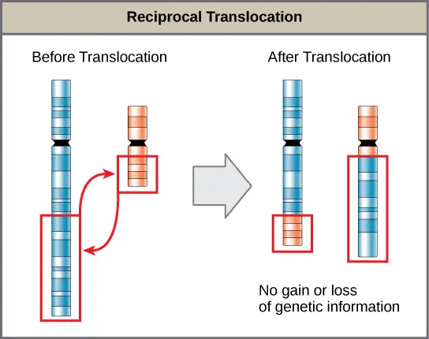
Chapter Review¶
Key Terms¶
- aneuploid
- individual with an error in chromosome number; includes chromosome segment deletions and duplications
- autosome
- any of the non-sex chromosomes
- centimorgan (cM)
- (also, map unit) relative distance that corresponds to a 0,01 recombination frequency
- Chromosomal Theory of Inheritance
- theory proposing that chromosomes are the genes' vehicles and that their behavior during meiosis is the physical basis of the inheritance patterns that Mendel observed
- chromosome inversion
- detachment, 180° rotation, and chromosome arm reinsertion
- euploid
- individual with the appropriate number of chromosomes for their species
- homologous recombination
- process by which homologous chromosomes undergo reciprocal physical exchanges at their arms, also crossing over
- karyogram
- a karyotype's photographic image
- karyotype
- an individual's chromosome number and appearance; includes the size, banding patterns, and centromere position
- monosomy
- otherwise diploid genotype in which one chromosome is missing
- nondisjunction
- failure of synapsed homologs to completely separate and migrate to separate poles during the meiosis' first cell division
- nonparental (recombinant) type
- progeny resulting from homologous recombination that exhibits a different allele combination compared with its parents
- paracentric
- inversion that occurs outside the centromere
- parental types
- progeny that exhibits the same allelic combination as its parents
- pericentric
- inversion that involves the centromere
- polyploid
- individual with an incorrect number of chromosome sets
- recombination frequency
- average number of crossovers between two alleles; observed as the number of nonparental types in a progeny's population
- translocation
- process by which one chromosome segment dissociates and reattaches to a different, nonhomologous chromosome
- trisomy
- otherwise diploid genotype in which one entire chromosome duplicates
- X inactivation
- condensing X chromosomes into Barr bodies during embryonic development in females to compensate for the double genetic dose
Summary¶
13.1 Chromosomal Theory and Genetic Linkage¶
Sutton and Boveri's Chromosomal Theory of Inheritance states that chromosomes are the vehicles of genetic heredity. Neither Mendelian genetics nor gene linkage is perfectly accurate. Instead, chromosome behavior involves segregation, independent assortment, and occasionally, linkage. Sturtevant devised a method to assess recombination frequency and infer linked genes' relative positions and distances on a chromosome on the basis of the average number of crossovers in the intervening region between the genes. Sturtevant correctly presumed that genes are arranged in serial order on chromosomes and that recombination between homologs can occur anywhere on a chromosome with equal likelihood. Whereas linkage causes alleles on the same chromosome to be inherited together, homologous recombination biases alleles toward an independent inheritance pattern.
13.2 Chromosomal Basis of Inherited Disorders¶
The number, size, shape, and banding pattern of chromosomes make them easily identifiable in a karyogram and allows for the assessment of many chromosomal abnormalities. Disorders in chromosome number, or aneuploidies, are typically lethal to the embryo, although a few trisomic genotypes are viable. Because of X inactivation, aberrations in sex chromosomes typically have milder phenotypic effects. Aneuploidies also include instances in which a chromosome's segments duplicate or delete themselves. Inversion or translocation also may rearrange chromosome structures. Both of these aberrations can result in problematic phenotypic effects. Because they force chromosomes to assume unnatural topologies during meiosis, inversions and translocations often occur with reduced fertility because of the likelihood of nondisjunction.
Visual Connection Questions¶
13.1 Chromosomal Theory and Genetic Linkage¶
1. Figure 13.3 In a test cross for two characteristics such as the one shown here, can the predicted frequency of recombinant offspring be 60 percent? Why or why not?
Answer
Figure 13.3 No. The predicted frequency of recombinant offspring ranges from 0% (for linked traits) to 50% (for unlinked traits).
2. Figure 13.4 Which of the following statements is true?
- Recombination of the body color and red/cinnabar eye alleles will occur more frequently than recombination of the alleles for wing length and aristae length.
- Recombination of the body color and aristae length alleles will occur more frequently than recombination of red/brown eye alleles and the aristae length alleles.
- Recombination of the gray/black body color and long/short aristae alleles will not occur.
- Recombination of the red/brown eye and long/short aristae alleles will occur more frequently than recombination of the alleles for wing length and body color.
Answer
13.2 Chromosomal Basis of Inherited Disorders¶
3. Figure 13.6 Which of the following statements about nondisjunction is true?
- Nondisjunction only results in gametes with n+1 or n–1 chromosomes.
- Nondisjunction occurring during meiosis II results in 50 percent normal gametes.
- Nondisjunction during meiosis I results in 50 percent normal gametes.
- Nondisjunction always results in four different kinds of gametes.
Answer
Figure 13.6 B.
Review Questions¶
13.1 Chromosomal Theory and Genetic Linkage¶
4. X-linked recessive traits in humans (or in Drosophila) are observed ________.
- in more males than females
- in more females than males
- in males and females equally
- in different distributions depending on the trait
Answer
A
5. The first suggestion that chromosomes may physically exchange segments came from the microscopic identification of ________.
- synapsis
- sister chromatids
- chiasmata
- alleles
Answer
C
6. Which recombination frequency corresponds to independent assortment and the absence of linkage?
- 0
- 0.25
- 0.50
- 0.75
Answer
C
7. Which recombination frequency corresponds to perfect linkage and violates the law of independent assortment?
- 0
- 0.25
- 0.50
- 0.75
Answer
A
13.2 Chromosomal Basis of Inherited Disorders¶
8. Which of the following codes describes position 12 on the long arm of chromosome 13?
- 13p12
- 13q12
- 12p13
- 12q13
Answer
B
9. In agriculture, polyploid crops (like coffee, strawberries, or bananas) tend to produce ________.
- more uniformity
- more variety
- larger yields
- smaller yields
Answer
C
10. Assume a pericentric inversion occurred in one of two homologs prior to meiosis. The other homolog remains normal. During meiosis, what structure—if any—would these homologs assume in order to pair accurately along their lengths?
- V formation
- cruciform
- loop
- pairing would not be possible
Answer
C
11. The genotype XXY corresponds to
- Klinefelter syndrome
- Turner syndrome
- Triplo-X
- Jacob syndrome
Answer
A
12. Abnormalities in the number of X chromosomes tends to have milder phenotypic effects than the same abnormalities in autosomes because of ________.
- deletions
- nonhomologous recombination
- synapsis
- X inactivation
Answer
D
13. By definition, a pericentric inversion includes the ________.
- centromere
- chiasma
- telomere
- synapse
Answer
A
Critical Thinking Questions¶
13.1 Chromosomal Theory and Genetic Linkage¶
14. Explain how the Chromosomal Theory of Inheritance helped to advance our understanding of genetics.
Answer
The Chromosomal Theory of Inheritance proposed that genes reside on chromosomes. The understanding that chromosomes are linear arrays of genes explained linkage, and crossing over explained recombination.
13.2 Chromosomal Basis of Inherited Disorders¶
15. Using diagrams, illustrate how nondisjunction can result in an aneuploid zygote.
Answer
Exact diagram style will vary; diagram should look like Figure 13.6.
Adapted from Biology 2e by OpenStax, licensed under CC BY 4.0. Access the original for free at openstax.org. Changes: converted to the web reading format of The Open Book Project.
-
Violaine Goidts et al., “Segmental duplication associated with the human-specific inversion of chromosome 18: a further example of the impact of segmental duplications on karyotype and genome evolution in primates,” Human Genetics. 115 (2004):116-122 ↩